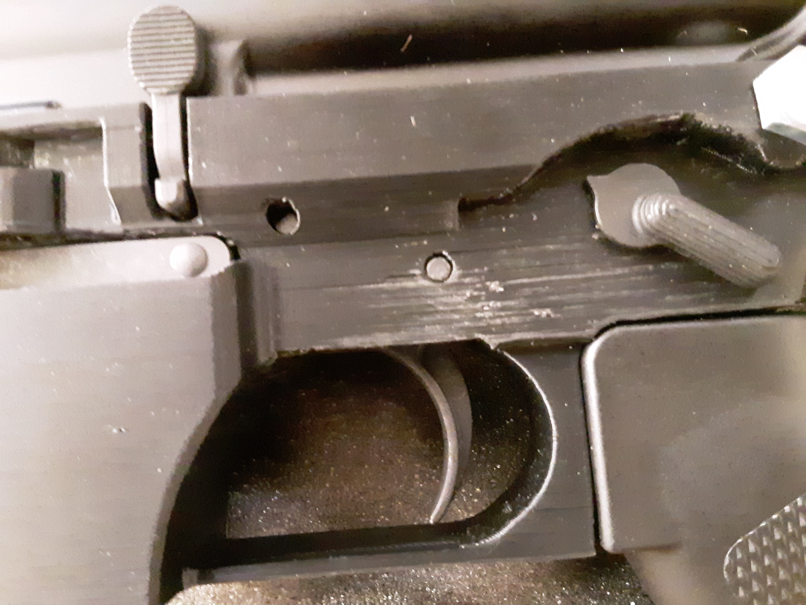
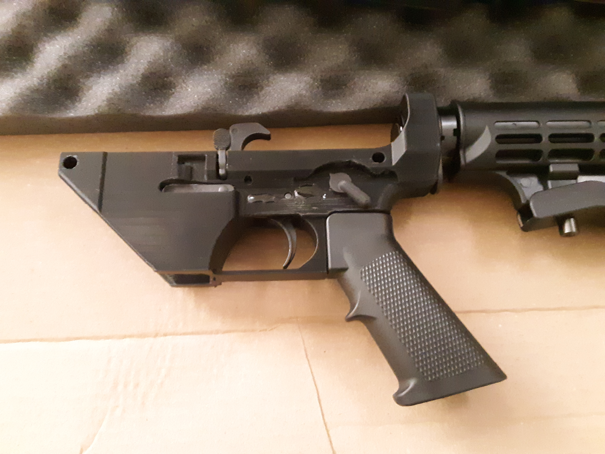

I went to my county's range (the only range near me where I don't have to bring an adult) today to test the AR15 that I built around the receiver I printed in PETG. It ran well! I put 40 rounds (steel cased, because it's really cheap) through it. The upper receiver smoked a little which looked cool (although it's hard to see in the video). However, there was some delamination around the pin for the trigger.  I think this is just a product of the gun getting slammed over and over again with the hammer swinging back and latching down. I filled it with epoxy to fix it for now.  So, overall, after 40 rounds the gun is in working condition. I'm curious as to whether or not using ABS and acetone vapor smoothing would help strengthen the outside shell and prevent things like this from happening. Different filament or print temperature might help too. If anyone is interested, my 03/14/2020 post describes the printing process and parts in more detail.